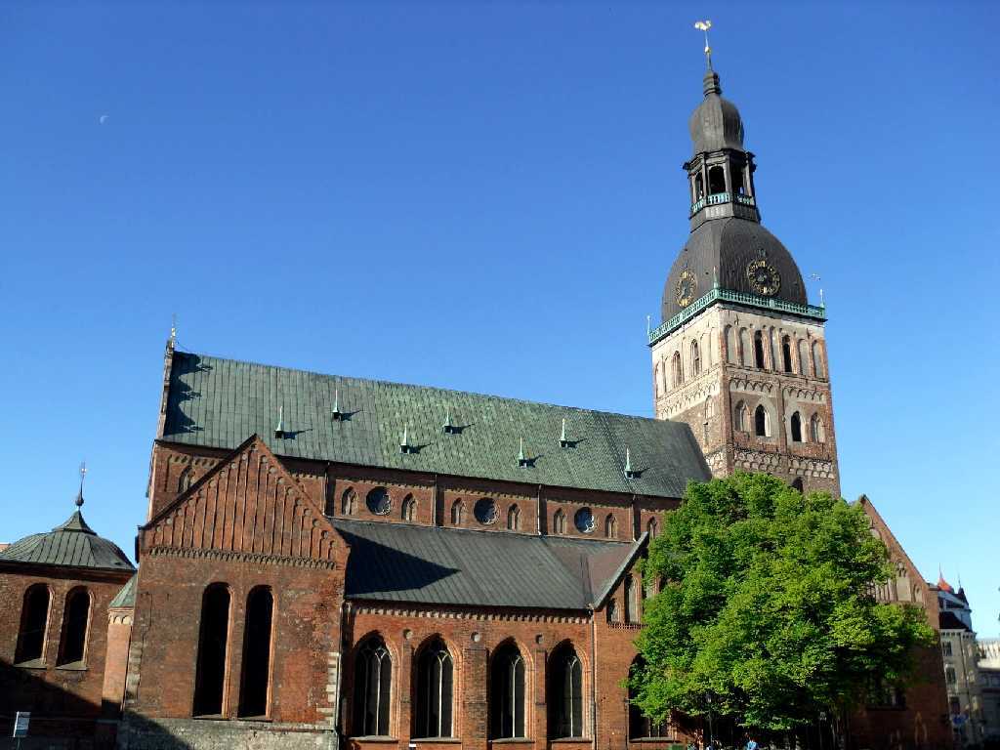
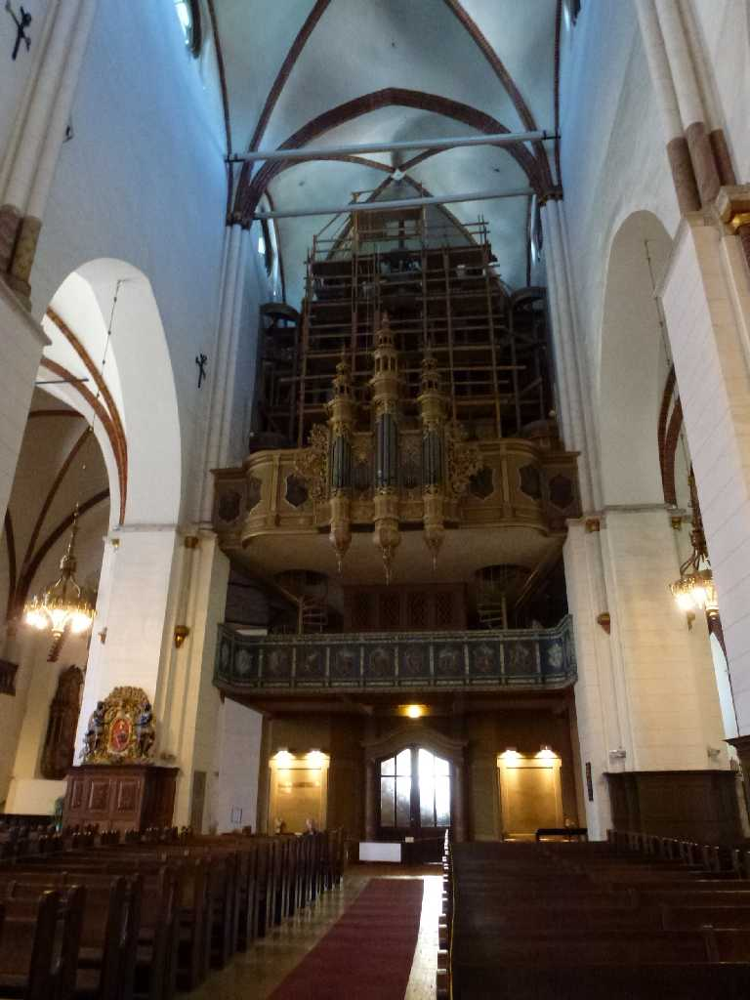
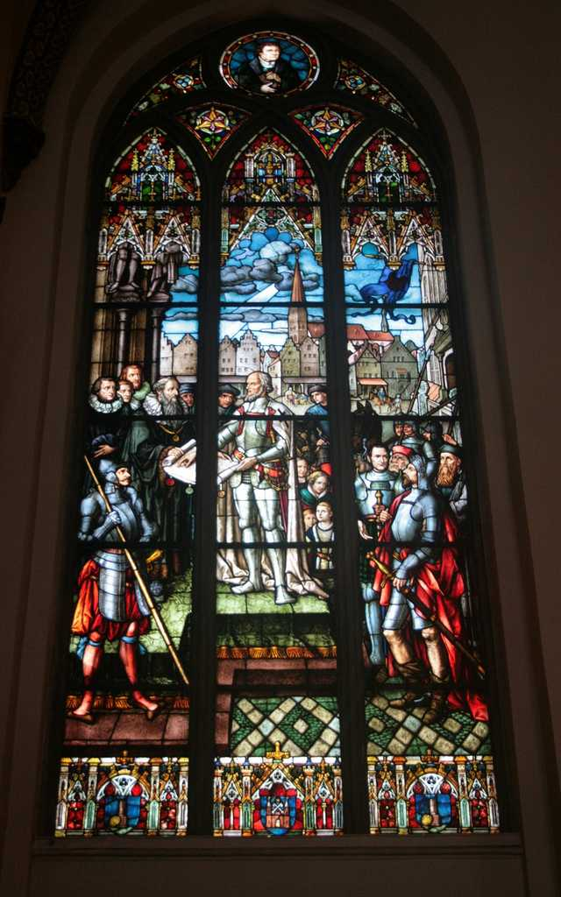
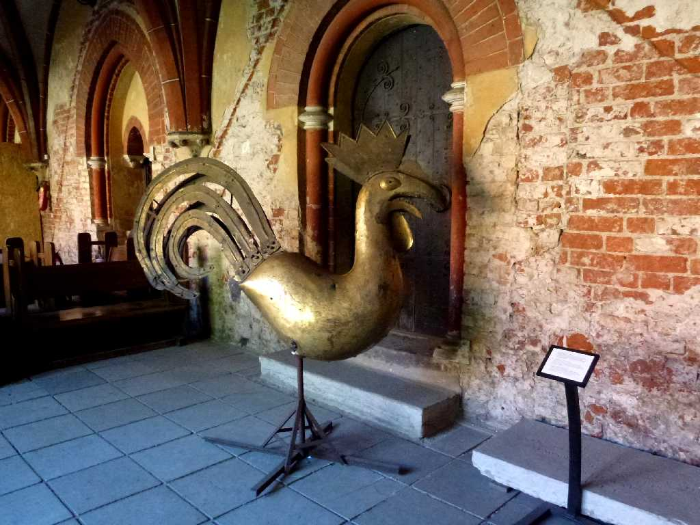

Rigas Doms Riga
１２１１年アルベルト司教により創建され１３世紀のロマネスク様式改修１５世紀のゴシック様式改修１８世紀のバロック様式改修が混在して残っている バルト三国中でも最大規模の中世大聖堂である

Pipe Organ
１８８４年に完成したパイプオルガンは最も古いものの一つで６,７６８本の音色パイプと１２４本の空気調節パイプからなり９オクターブ半の音色を奏でる巨大なもので夕刻の演奏会を楽しんだ

Stainedglass
リガの歴史を表わしたステンドグラス群が美しい

Weathercock
修道院に残る尖塔にあった初代風見鶏